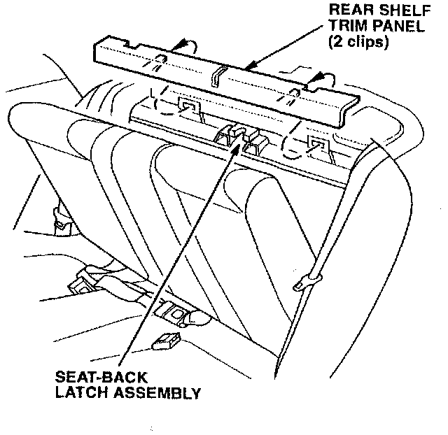
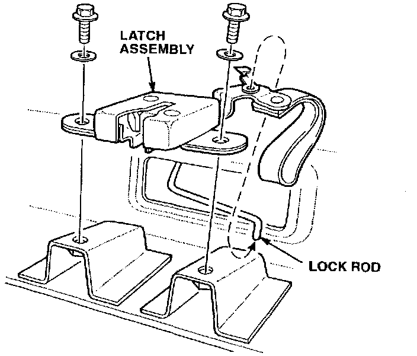
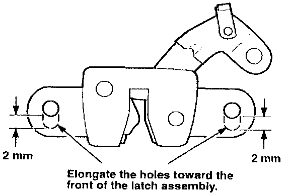

Rear Seat - Back Rattles
December 10, 1996BULLENTIN NO.
96-056
YEAR
1994-97
MODEL
INTEGRA
VIN APPLICATION
See VEHICLES
AFFECTED
The Rear Seat-Back Rattles
SYMPTOM
The rear seat-back, when it is upright, rattles when driving on bumpy roads.
PROBABLE CAUSE
The rear seat-back latch is misadjusted.
VEHICLES AFFECTED
Integra 4-door
1994 - 96: All
1997:
RS, LS - Thru VIN JH4DB7.. .VS001305
GS-R - Thru VIN JH4DB8.. .VS000241
DIAGNOSIS
Drive the car with the rear seat-back folded down. If the rattle is gone, proceed with CORRECTIVE ACTION.
CORRECTIVE ACTION
Enlarge the mounting holes, then adjust the rear seat-back latch.
1. Fold down the rear seat-back.

2. Remove the rear shelf trim panel.
3. Disconnect the lock rod from the seat-back latch assembly.

4. Remove the two latch assembly mounting bolts.

5. Elongate the holes in the latch assembly approximately 2 mm with a rat-tail file.
6. Reinstall the latch assembly. Move it toward the rear of the car.
7. Reconnect the lock rod.
8. Adjust the latch assembly position so the seat-back locks and releases smoothly and the seat-back no longer rattles. Torque the mounting bolts to 9.8 N-m (7.2 lb-ft).
9. Reinstall the rear shelf trim panel.
WARRANTY CLAIM INFORMATION
In warranty: The normal warranty applies.
Operation number: 853901
Flat rate time: 0.5 hour
Failed P/N: 82220-S R4-013
Defect code: 043
Contention code: B07
Template ID: 96-056A
Out of warranty: Any repair performed after warranty expiration may be eligible for goodwill consideration by the District Technical Manager or your Zone Office. You must request consideration, and get a decision, before starting work.